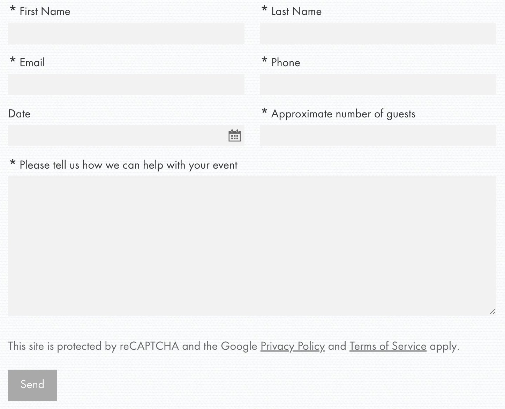
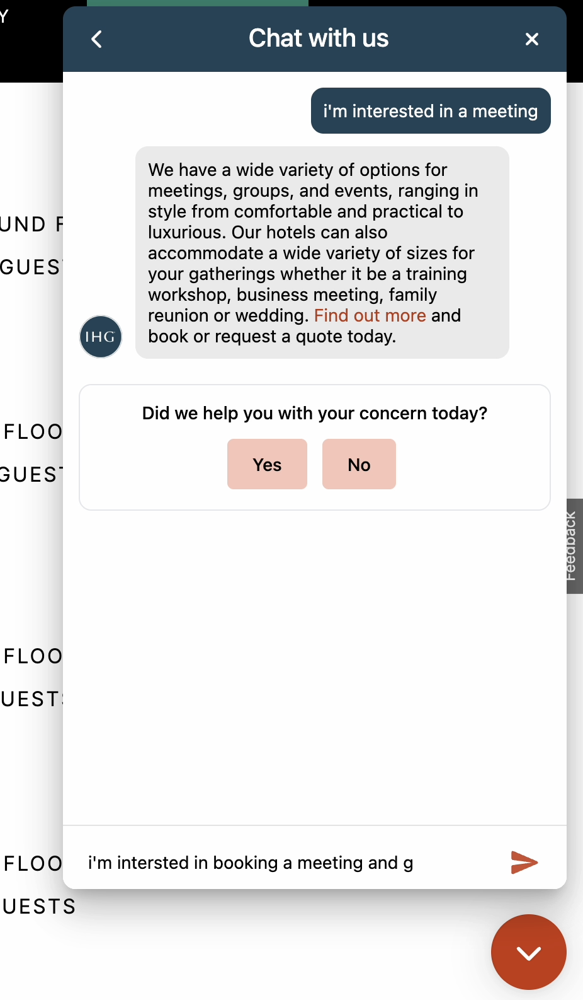
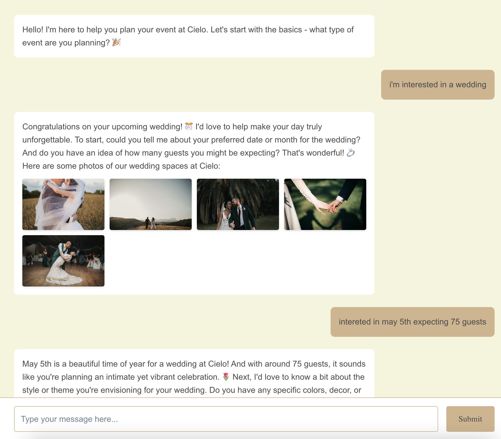
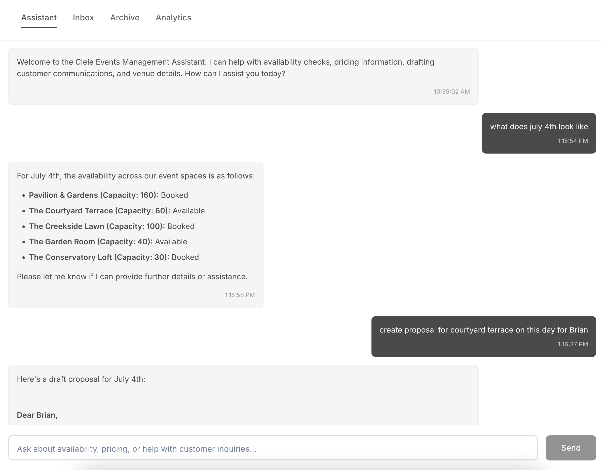

Building Line: software for guests and teams
Kyle shares the inspiration for Line
For event, rental, and group sales: a sales agent for guests and an assistant for your team.
Instant, professional responses for your customers.
Faster bookings, less manual work for your team.

Line replaces your contact form with a smart assistant that helps guests plan and visualize their event: instantly answering questions, sharing images, and qualifying leads for your team.

Managers receive summarized inquiry details and use AI to generate proposals, timelines, and follow-ups, speeding up the sales process and improving quality.
Line doesn't just answer questions, it gets things done. It checks availability, drafts custom proposals, generates contracts, and responds to customer questions using your real property specs, pricing, and amenity options. All tailored to the specific event and ready to send instantly.
Kyle shares the inspiration for Line
Customers expect immediacy and personalization
From the age of 15, I worked in nearly every hospitality role you can imagine: housekeeping, front desk, bartending, night audit, catering coordination, sales, and conference services. I worked in mom-and-pop venues, catering-only businesses, and global hotel brands like Kimpton, across places like San Diego, Vail, and Washington D.C. These experiences taught me that hospitality is about how you show up, lead, and serve guests with deep care. And while that was my day job, at night I was teaching myself design and how to build websites...
Later, I transitioned into tech and I've been building software nearly a decade and half with organizations of all sizes and capacities: client work in fin-tech, dev tools like GitLab, to early-stage startups. During this time, I learned the power of building systems that scale, solving deep user and technical problems, and how innovation comes one small experimental iteration at a time.
Now I'm coming full circle: combining those two worlds to help fix what's broken in hospitality today. Along the way, I kept hearing the same frustrations:
"I'm so tired of this every weekend I come to work to do all the computer stuff."
– Conference Services Manager
"Instant attention is everything now with these young people. If they don't hear back in a minute, they freak out. I still block off dates manually in Google Calendar."
– Owner, Event Venue
"I wish there was something to clean up our emails – my team is totally bogged down. Our setup sucks and I hate Salesforce."
– Director of Sales
"The top concern every year at the GM's meeting was how broken the sales workflow was (groups, meetings, and events)."
– GM
"From inquiry to invoice, our workflow is super manual. The biggest issue is inventory management."
– Owner, Rentals Company
I know what it's like to sell and then run an event with a skeleton crew. I've stayed up all night fixing last-minute banquet orders. I've wrestled with endless email threads, broken CRM setups, and customers who never received the information they needed. I've heard hundreds of stories just like mine. I've felt the pain of clunky software too (monopolies get lazy, looking at you Opera and Delphi 😠 and instead of improving seem to focus on gatekeeping their API, and charging customer more and more each year).
But I've also been on the other side – the customer who fills out a form and never hears back. Who gets a generic copy-paste email with a PDF attachment, sometimes even addressed to the wrong name, like 'John', because it was copied from the last email they sent. Who calls in the evenings or weekends, when they finally have time, and no one answers. The experience is broken on both sides. And no matter the size or type of venue, the stories always sound the same.
That's why I'm building Line – to bring hospitality to the full experience, not just the moment a guest arrives. I believe the guest experience starts at the first click, and it should feel as welcoming, responsive, and thoughtful as check-in. At the same time, I want to make life easier for the teams who make these events happen. Line is here to serve both sides of that equation – the guest and the staff – with tools that reflect the spirit of great hospitality from start to finish.
Today's customers expect fast, clear, and thoughtful responses, yet most hospitality teams are stretched thin, buried under outdated workflows and clunky tools.
You've probably experienced it yourself:
And on your side? You're juggling proposals, availability, inventory, and guest expectations, often without the right systems in place. It's not just stressful, it's unsustainable. And to be really honest, not hospitable!
Line is an AI-powered assistant built specifically for hospitality teams.
Think of it as an always-on, highly trained helper that knows your business and can assist with:
For your team, Line saves time and makes your life easier. For your guests, Line offers the warm, professional service they expect: instant hospitality. We believe the inquiry experience is the guest experience. So we're starting there.
Line is for any hospitality business that handles private events, rentals, or group sales. Line is building out integrations to work alongside the tools you're already using, not to replace them. We're not building cold automation. We're building warm, AI powered responsive tools that help you show up better for your guests.
At Line, we aim to be unreasonably hospitable. Not just in how we serve your guests, but in how we serve you. Our goal is to bring the same level of care and professionalism to your sales process that your team brings to every event. We're starting with: an embedded assistant for inquiries, paired with a manager dashboard that helps you respond, schedule, and close.
From there, we're building a complete solution that handles everything from inquiry to invoice. One seamless workflow that ensures your guests feel taken care of at every step - whether they're browsing your website, planning their event, or experiencing it at your property.
If you're tired of duct-taping tools together or losing business due to delays, I'd love to show you what we're building. We're rolling out with a handful of early adopters and actively iterating on the product with them. If that sounds like something you want to be part of, I'd love to talk.
Thanks for reading – how may I be of service? Let me know at kyle@withline.io
– Kyle
If you're in the hospitality business - whether you're running a boutique hotel, a wedding venue, a rental company, or an event space - you already know how important it is to deliver exceptional service once a guest arrives. Beautiful spaces, warm greetings, and attention to detail are table stakes.
But the thing is: for your guests, the experience doesn't begin at check-in. It begins with the first click. Look around the industry and it's clear - that same warm, high-touch hospitality that defines your property often disappears online. Instead, guests are met with outdated websites, confusing layouts, and a generic form at the end of a long scroll.
What should be an exciting moment - envisioning and planning an event - turns into frustration. You click around, hoping for inspiration or clarity, and instead land here:
A cold, impersonal form. It's something you fill out not because you want to, but because it's your only option. And if you decide to call instead? Either you're playing phone tag or yelling "agent!" at a phone tree. Or worse, interacting with a chatbot that's not built to help.
This experience isn't just inconvenient - it's the opposite of hospitality.
Consider this recent experience: I tried to submit a group meeting request at the local IHG-Kimpton Armory Hotel. I couldn't complete the form. I called, but it was the weekend, so no one was available. When I finally connected with someone the following week, I explained how hard it was to get in touch. The Director of Sales told me, "well, all places are like that, sales offices work 9 to 5". And about the website, "well, you need to contact IHG".
And the director isn't wrong - I've been there. But what's missing is that the staff all too often is working nights and weekends just to stay afloat. And still, they can't keep up. That mindset of "that's just how it is" isn't just disheartening - it's the enemy of hospitality and innovation. All told, guests are frustrated, staff are exhausted, and opportunities slip away.
This is the unfortunate reality in hospitality today. And it's a problem I'm determined to solve.
Guests expect clarity and responsiveness from the moment they hit your website. And yet, most hospitality businesses fall short:
That first interaction sets expectations: Can I trust this team? Will they respond quickly? Do they care? And if the experience feels impersonal or slow, the guest moves on.
Line has created a solution that helps your customers upon inquiry and provide instant feedback, questions, and tailor made visuals to help them kick off the experience.
Outdated tools, manual processes, and siloed systems don't just create stress - they cost bookings.
"My team is buried in emails and can't keep up."
"Guests want fast answers, and we can't keep up."
"We miss leads all the time."
We built Line to fix that. Our assistant connects to your tools, learns your spaces, and helps you respond faster. That means less chasing emails and more time actually serving your guests.
Your online experience is your brand. It's time we treated it with the same care we give the lobby, the room, or the reception hall. If you're ready to deliver hospitality from the first click - not just from check-in - we're building Line for you.
If this resonates, let's talk. We're working with partners who are ready to raise the bar, for their guests and their teams. How may I be of service?
Reach out: kyle@withline.io
Discover how AI is transforming the way hospitality businesses handle bookings
As an event company owner, I've navigated countless back-and-forth conversations with venue sales associates, often feeling bogged down by the sheer amount of communication required to get everything just right. My events come with specific requirements—a patio that's fully fenced, dog-friendly policies, a certain price point, and ideally some roof coverage. While these details ensure a seamless experience for my clients, hashing them out often feels tedious and inefficient.
This inefficiency doesn't just impact me; it affects the sales associates too. I've seen firsthand how the endless emails, phone calls, and potential miscommunications can leave staff drained, making them less present and less effective when the event day arrives. The back-and-forth takes a toll on everyone involved, and the risk of unmet expectations can create unnecessary stress.
That's why I was so eager to help develop and advocate for Line, a platform that's transforming how venues and customers communicate. Imagine being able to review a venue's Instagram profile or website, then seamlessly initiate a conversation through Line, getting real-time answers to all your questions. With Line, I can confirm key details about roof coverage, fencing, and dog-friendly policies without ever feeling like I'm going in circles. By the time I'm ready to book, I have complete confidence that my expectations are clear and will be met.
For event owners like me, Line solves some of the most persistent challenges:
What makes Line truly stand out is its ability to minimize human error. Traditional chatbots often fall short, offering limited responses that can't progress an inquiry meaningfully. On the other hand, Line combines advanced automation with real-time human support when needed, ensuring that nothing falls through the cracks.
As an event company owner, I know how critical it is to work with venues that value efficiency and professionalism. That's why I'm now using my experience and passion to help venues adopt Line. By integrating this platform, venues not only improve their booking process but also demonstrate to customers that they're committed to providing a premium experience. Early adopters of Line are already seeing the benefits: faster sales cycles, happier clients, and a competitive edge in the market.
In the fast-paced world of event planning, tools like Line aren't just helpful—they're essential. For any venue looking to enhance its operations and attract more bookings, the choice is clear: streamline your process, embrace innovation, and show your customers that you care.
If you're ready to transform your venue's booking experience, let's connect. Together, we can make tedious communication a thing of the past and create a future where event planning is as seamless as it's meant to be.
Reach out: sylvia@withline.io
Travel is booming and people are craving IRL
Great hospitality starts with the people behind it
There's no shortage of noise around AI: dramatic headlines, dire predictions, and endless hot takes. But while that noise plays out, we're focused on building: technology powered by AI that can actually help event and hospitality teams get back to doing what they do best.
Hospitality is about presence. It's about creating moments that feel personal and memorable. It's why so many people chose this profession in the first place: to host, to connect, to make someone's day.
But somewhere along the way, teams got stuck juggling clunky websites and repetitive admin, while dealing with staffing shortages and growing guest expectations. Instead of spending time with guests, they're fighting with their tools.
We believe innovating the workflows with LLMs is an opportunity to change that. Not by replacing people, but by freeing them:
One restauranteur put it simply:
"I'd love to get this email and booking stuff off my plate, and back to innovating my menus and events for my guests."
Exactly. That's our vision.
At Line, we're building tools that serve your staff the same way your staff serves your guests. Tools that quietly remove the friction, so your team can be more present, more responsive, and more focused on what matters most: the guest experience.
Because here's what we see: travel is booming and people are craving real-life connection. Hospitality is the industry that can deliver it, but only if we give teams the support they need. This is the golden age of hospitality and it's time the tools caught up.
If you're building for this future too or if you're just tired of being held back by outdated systems – we'd love to talk.
Let's build together. Let me know how we can help: kyle@withline.io
Lately, I've been visiting venues, museums, and hotels and talking with operators. Walking into these properties, you're immediately struck by the design, ambiance, and attention to detail. When it's done right, it doesn't just feel like a welcome home, it feels like wow, I get to hang here 😎.
Then, I get ushered into the back office. Anyone who's worked in hospitality knows the contrast. The back of the house is often the complete opposite of the guest-facing side: cluttered, dated, and stressful. That's not something Line can fix physically. But what we can do is bring hospitality to your staff's workflows (and guest).
Line is building an experience that treats your team with the same thoughtfulness and service that you extend to your guests. Our interface says, "How may I assist you?". Why shouldn't your staff experience the same level of care you aim to deliver on property?
In nearly every conversation I've had, the post-COVID challenges are clear:
"We used to run with 14 staff, now it's 5, and we have double the demand."
"We can't find talent. Many have left the industry entirely."
"My team is exhausted. They're drowning in busywork."
There's something wrong when one of the most service-oriented industries is stuck with some of the clunkiest, most unfriendly tools out there. We believe great hospitality starts with the people behind it and they deserve better systems!
If this resonates, let's talk. We're working with partners who are ready to raise the bar, for their guests and their teams. How may I be of service?
Reach out: kyle@withline.io
Sign up and we'll notify you with early access.